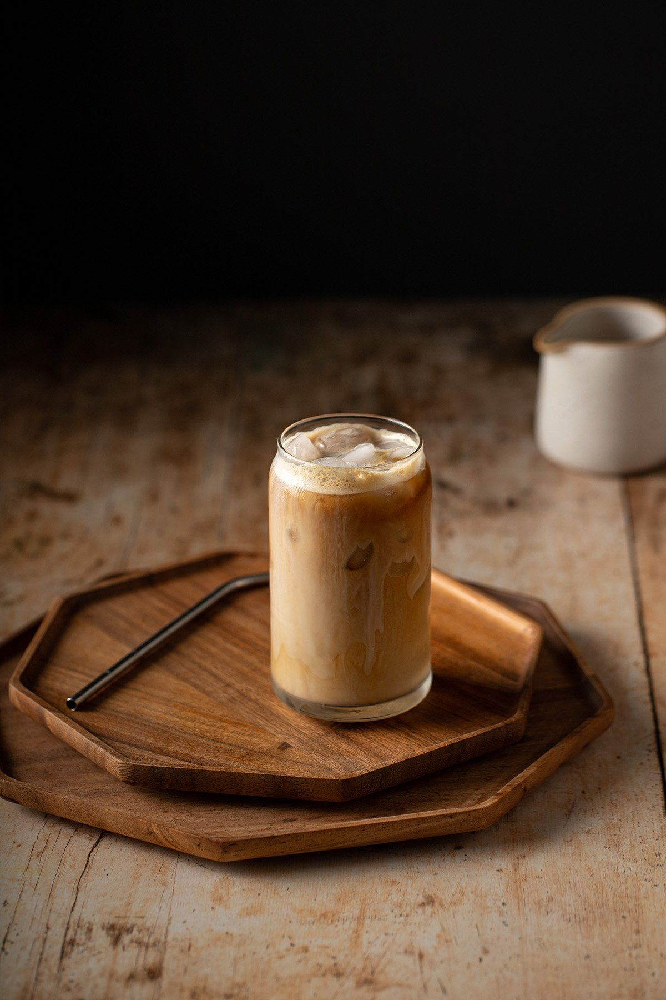
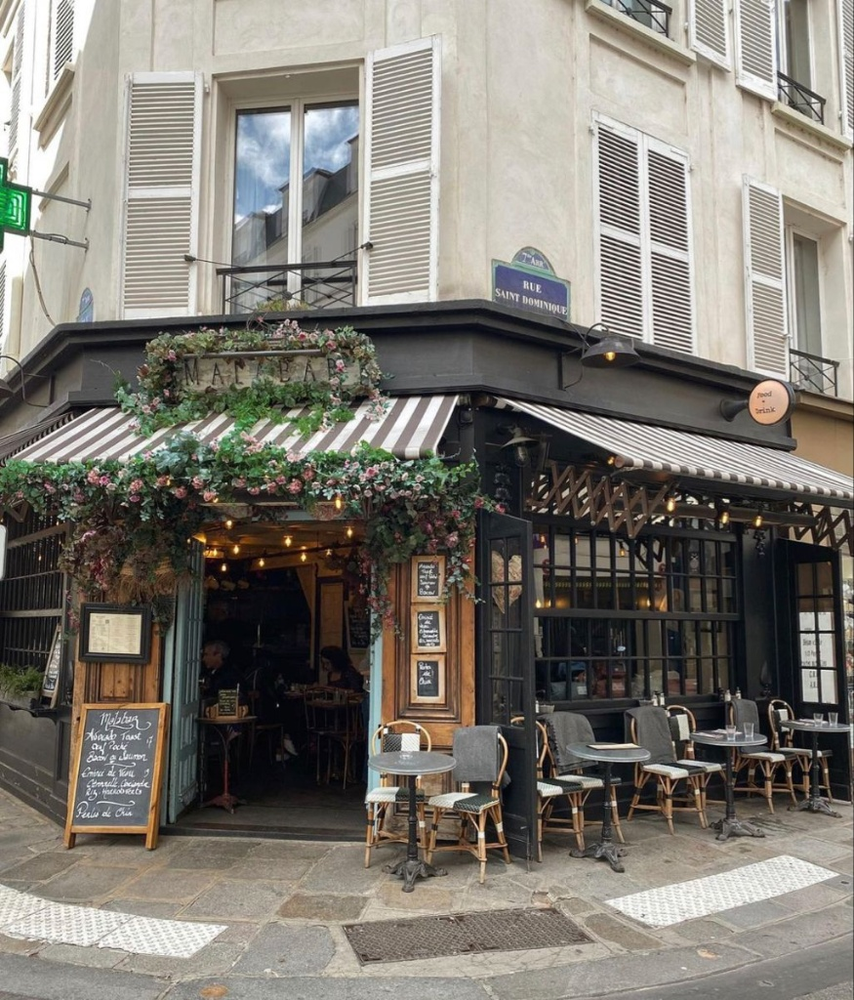

Quality Coffee
We strictly prioritize on high quality coffee beans and provide quality roasting for a rich taste in every cup.
LIFE IS SHORT. ENJOY YOUR CAFE.
Local Cafe was founded in by a group of four digital technology students from AUPP. Every member of the group loved visiting different cafes, but often encountering places with poor quality coffee and service. Therefore, we decided to start up our shop with one clear purpose: to allow the customer to experience what a good cafe should feel like.
Refresh Relax Resume
We strictly prioritize on high quality coffee beans and provide quality roasting for a rich taste in every cup.

All of our food and pastries are freshly baked daily with experienced bakers.

Try out our famous Ice Latte smooth, balanced, and made to keep your day alive.

A warm and cozy environment for studying and long term focus with reusable cups to save the environment.

Seating: Cozy indoor and refreshing outdoor seating (Approximately 10 seats in total).
Good For: Studying, group meetings, and hanging out with friends.
Address: Street 201R, near AUPP, Sangkat Kilometer 6, Khan Russey Keo, Phnom Penh
Opening Hours: daily
Phone: 011 967 399
Instagram: @localcafecambodia